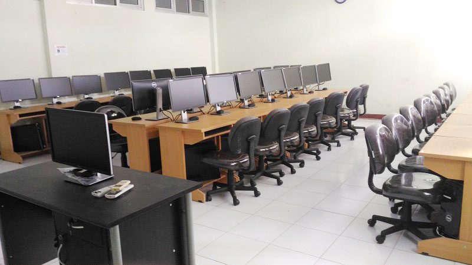

| HOME | JURUSAN | LABORATORIUM | LAYANAN | ABOUT |
 |
||
|
<< TESTIMONI >> |
||
"Visi Misi Jurusan"
MISI 1. Meningkatkan mutu, akses, dan relevansi pendidikan Politeknik di bidang Teknik Informatika untuk menghasilkan lulusan sesuai kebutuhan pekerjaan2. Melakukan penelitian terapan dan pengabdian masyarakat di bidang Teknik Informatika untuk mengatasi persoalan industri dan masyarakat TUJUAN Menghasilkan lulusan kompeten dengan ciri ketrampilan kerja tinggi yang mampu bersaing secara global Memberikan solusi persoalan industri dan masyarakat tingkat nasional melalui penelitian terapan dan pengabdian kepada masyarakat |
Profil Lulusan 1. PROGAMMER APLICATION : pengembang aplikasi 2. DESIGNER APLICATION : pengembang desainc 3. NETWORK ADMINISTRATOR : perawatan jaringan 4. IT SUPPORT : pendukung it bisnis 5. TECHNOPRENEUR IT : wirausaha it |
|
| Info Admin Handika Nurduhri handikann@gmail.com 45611, Cirebon |
Copyright by Handika Nurduhri |